Gunn Peak
Gunn Peak had been on my mind for a few years. On many trips to Leavenworth and elsewhere, I’d been impressed by the set of peaks just left Mt. Baring, visible from the town of Gold Bar. There don’t seem to be any trails in this whole block aside from Barclay and Eagle Lakes. In June of 2000, I decided to try for the summit, but I was rudely turned away in the brushy forest near Barclay Creek - an alder tree slapped back on my head and knocked a contact lens out. By the time I got back to the car I had a splitting headache and was completely disgusted with the thick, dense brush. So I put the idea away for a while. Later, having battled oceans of brush on the North Peak of Mt. Index, I felt ready for another go. How could I let this beautiful summit stand unvisited? In the meantime, Jeff Smoot and friends made the climb, advising a bushwhack with a compass baring of North from near the Barclay Lake parking lot. They found very extensive brush above 4,000 ft. I hoped to do the climb earlier when all that was snow covered.
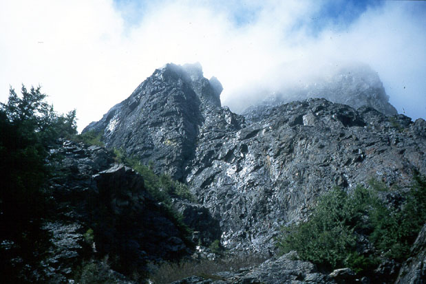
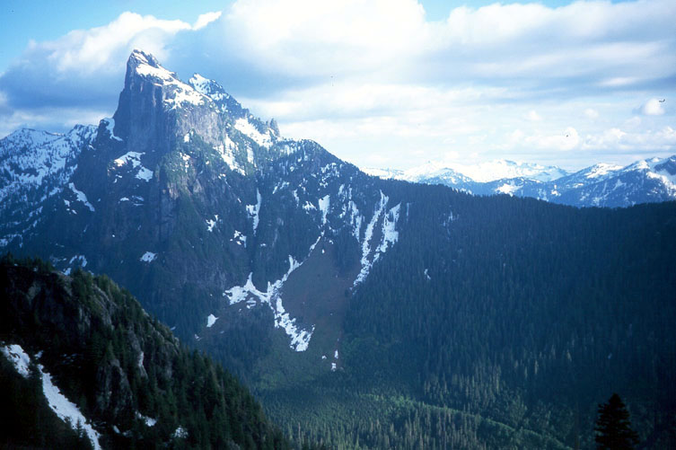
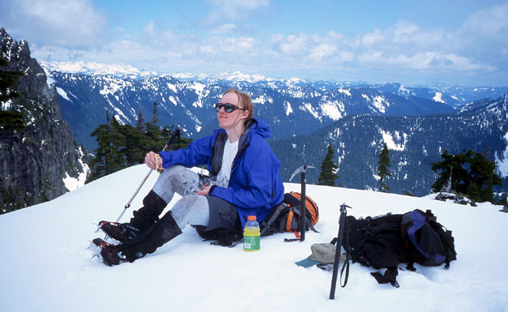
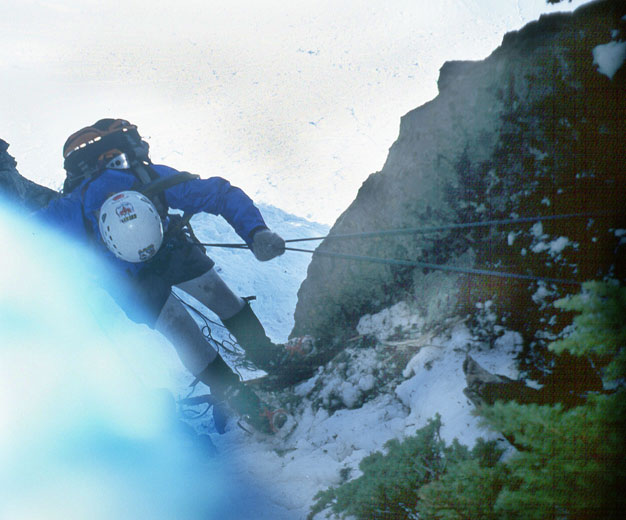
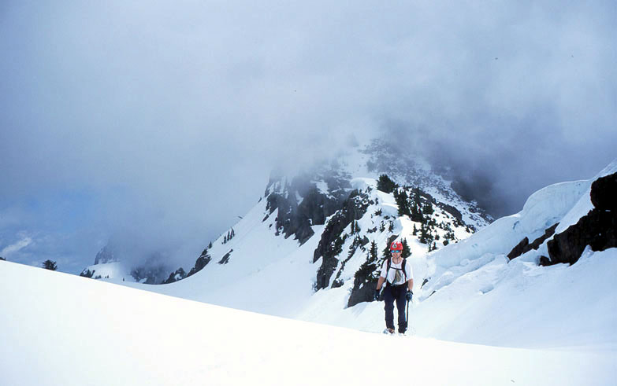

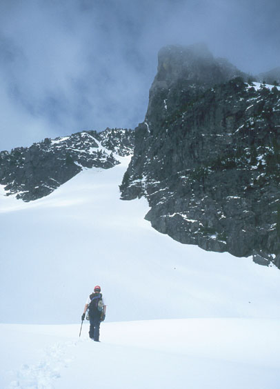
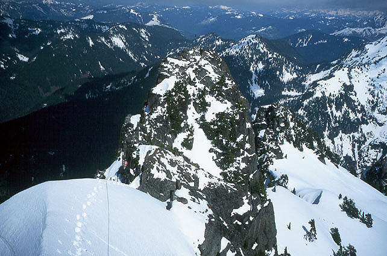
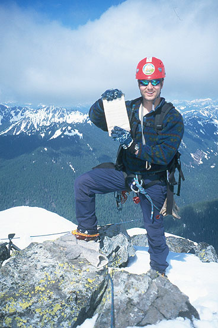
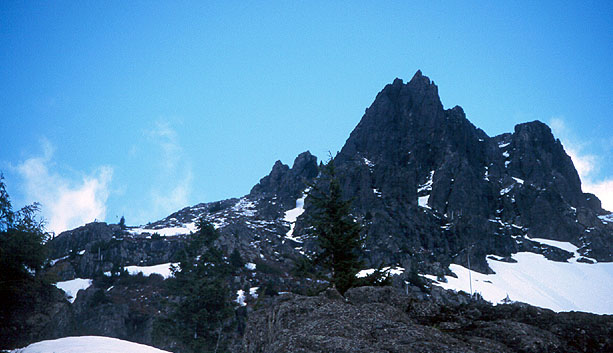
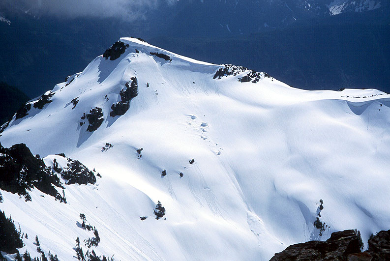
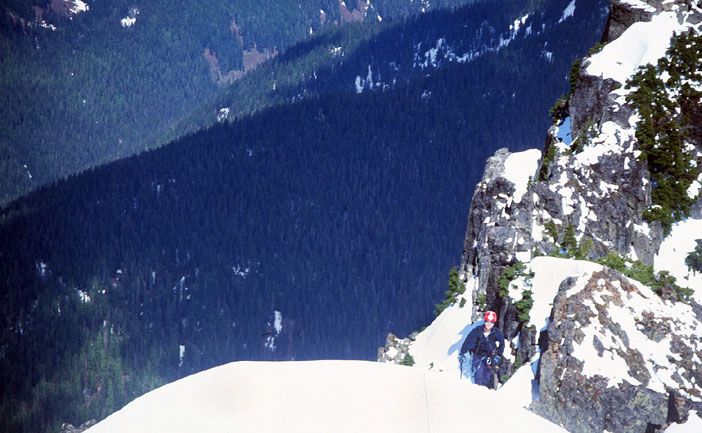
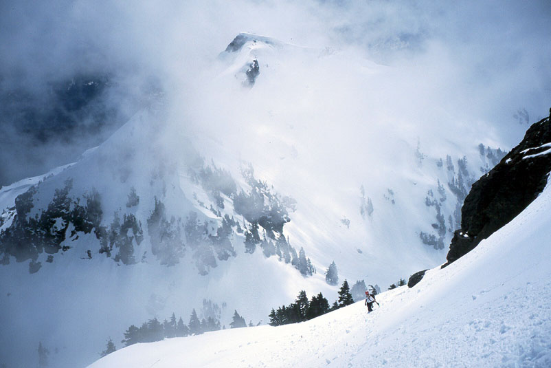
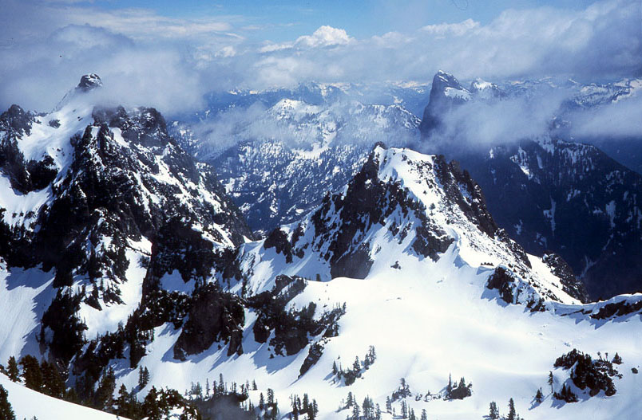
The chance came when Peter Chapman and I had a beautiful Sunday free in June. Peter has a great character, being willing to go along despite my stories of brush horror. Within minutes, we’d crossed Barclay Creek and gotten into thick stands of alder, devils club, rotten logs and spiders. But we continued following the compass north and finally emerged on an abandoned road. Our directions were vague from here, but amounted to continuing north until reaching a climbers trail on a steep slope. We did this, contouring a tiresome, brushy hillside into older trees. We went a bit east of north though, and almost came to despair in steep dense brush (did I mention how late our start was? 9:00 am I think). But suddenly Peter espied a trail, and this time he was not kidding! After our difficult journey of more than an hour (and about 300 feet elevation gain), this trail looked like a red carpet to the sky. Thankfully, we watched it like a hawk, occasionally losing it but getting it back every time. We climbed for an hour and came to a rocky buttress at about 4,000 ft. elevation.
Here we decided to keep following the fainter path around the buttress to the right until it was buried in snow. We continued around the buttress, sometimes climbing on steep rock and dead trees. We climbed into a gully and crossed a stream at a cliffy ledge. Then we continued vaguely up until the valley opened up into snow slopes with a view of craggy peaks ahead. “Yes!” Having found our way to this area, we knew the rest would be cake - the brushy approach is the crux of this climb!
Peak 5760 looked very steep above on the right. Clouds came in and out, finally coming in and staying with us. We settled in for a gray day as we hiked snow slopes to the pass at 5300 feet. By waiting a few minutes, we got a glimpse of our mountain, looking very impressive across a shallow, snowy valley. We climbed steeply down a corniced ridge and hiked to a knoll for some lunch. The clouds lifted! From now on, we had blue skies in our local area, with clouds miraculously diverging from our range to the north and south.
Peter kicked steps up the broad gully (scree in late season) to a steeper, icy gully that remained just out of sight on our right until we were just below it. We climbed up, making a few rock moves in crampons to reach a shrubby ridge that led to the great snowfield below the summit ridge.
We didn’t like the snow as much here. The afternoon was wearing on and the air was hot and still. We climbed near the top of this snowfield, but were nervous about the possibility of slides. At that moment an explosive boom echoed across the valley - the first of many afternoon avalanches we would hear. Not wanting to traverse any further, possibly nervousness led me to identify a moderately steep but inviting couloir as our way to the summit ridge. The correct route traverses past another buttress to an easy snow slope finish that gains the ridge. But our route was more exciting!
There were some delicate moves getting over a natural moat where the snow pulled away from the rock. Climbing onto a snow wall above, I found a rappel sling around a tree. “This must be the route then!” I said hopefully. Peter made the moves and we climbed snow to a headwall with a short rock step. We had a rope and some gear, and this was a good place for a belay. I anchored to a scrub tree and belayed as Peter made a few delicate moves to the ridge crest. Safely there, I climbed up and continued on the beautiful crest towards the summit. I could see the town of Index far below, and a wild valley floor. I had to be careful to avoid walking on cornices, so I made steep snow traverses around these. Peter began climbing with me, and soon I was on the summit, taking pictures of Peter on the ridge.
Peter arrived and we broke out the register, wrote some stuff, and read back a few years. Apparently this is a popular mountain to climb in a gray murk! The view of Jumpoff Ridge and down to Gunn Lake was pretty wild. Merchant and Baring Peaks looked incredible. We didn’t want to hang out long due to the booming avalanches and softening snow, so we limited our visit to a few glorious minutes pointing out peaks. We climbed down and made a 20 foot rappel past the rock step, then another short rappel over the moat at the entrance of our couloir. Quickly escaping from the broad snowfield, we made a 25 meter rappel down the icy couloir to the broad gully. After putting away rope and harness, we walked and glissaded down to the basin and up (pretty slowly now) on a traverse to the saddle leading back to the car. We hiked quickly down to the brushy terrain, noticing another pair of tracks that came up from the brush, intersected ours and ended - presumably returning the way they came. Seems strange to hike through brush hell and end your journey when the traveling gets easy!
We retraced our route past a waterfall to the rock buttress at 4,000 ft., then made good time on the steep forested trail. Peter, always a good mountain steward, removed about 25 sticks from the trail. I removed one and got a hurrah of encouragement from Peter. “I must try to be a better person,” I thought!
We were so happy to find the trail lead past where we found it and down to an open area and road in the forest. Surely we’ll walk easily to the car now! Then I remembered reading that Jeff Smoot and party had the same thoughts at the same place. Sure enough, the “road” suddenly became faint. We heard drums echoing in the deep , and Gandalf said, “Fly! Run for your lives, fools!”
Legolas found a faint “trail” ahead and I followed with the compass to keep us traversing south. After a small eternity, we emerged on an abandoned road we had left in the morning (at the same place we left!). We continued on a bearing south to Barclay Creek and our log crossing, then admired the evening view as we walked the road back to the car. No Forest Service Ticket - yay!
Thanks to Peter for embarking on this adventure with me! Now that we know the way, it’s really not so bad of an approach - just accept that there will be bushwhacking at the start and end of the day.